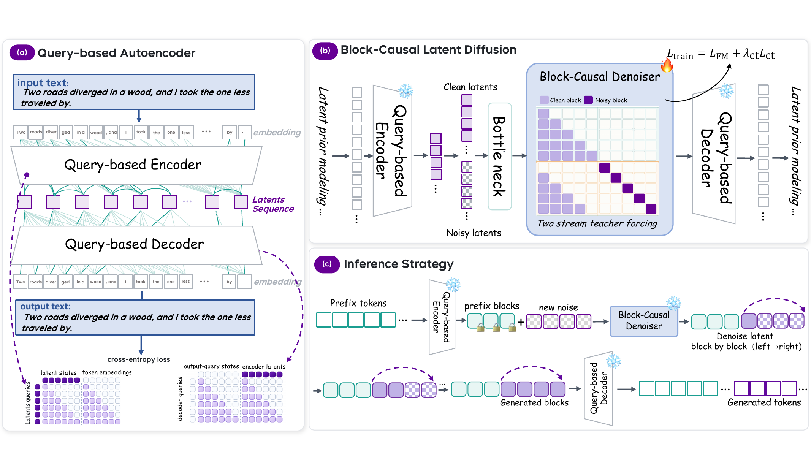
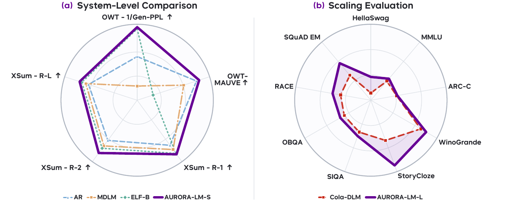

01 · LATENT INTERFACE
High-capacity decoder-facing latents
The latent sequence preserves the information needed for accurate token recovery rather than treating compression as the default route to tractable generation.
Autoencoding Unified Representation for Continuous-Latent Diffusion Language Modeling
PRLab, Nanjing University · S-Lab, Nanyang Technological University · Imperial College London
* Equal contribution · † Corresponding author
AURORA-LM separates the construction of a decodable continuous text latent from modeling its generative distribution. Rather than reducing the decoder-facing representation to simplify diffusion, it retains a high-capacity latent and configures the denoiser to learn it effectively.

A Query-based Encoder-Decoder constructs an ordered continuous text latent; a block-causal denoiser learns its distribution through flow matching and generates latent blocks from left to right.
The latent sequence preserves the information needed for accurate token recovery rather than treating compression as the default route to tractable generation.
The denoiser predicts the full clean latent consumed by the decoder, while a low-rank pathway restricts only how the noisy state enters the Transformer.
Latent blocks are generated left to right, while positions inside each block are denoised in parallel and stabilized with trajectory-level consistency.

AURORA-LM is evaluated on OpenWebText free generation, XSum conditional summarization, and a nine-task large-scale benchmark protocol.
This official repository is being prepared for the public release. Training code, evaluation scripts, and checkpoints are not yet available.